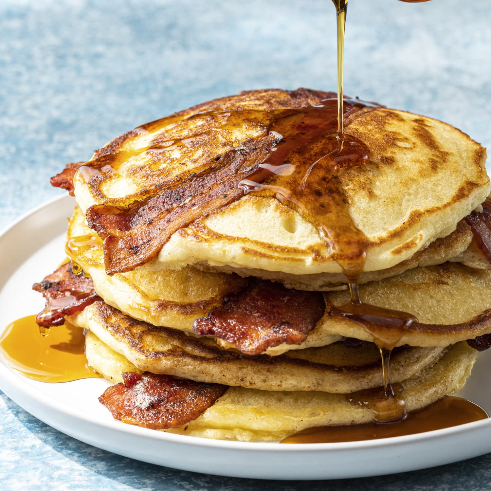

Divine Pancakes

Description
If you're anything like me, then no breakfast food will ever trump the simple elegance.. and pure decadence.. of "the pancake"! This is a great recipe that I found on the recipe website referenced by The Odin Project.
Ingredients
- 1 1/2 cups all-purpose flour
- 3 1/2 tsp baking powder
- 1/4 tsp salt, or more to taste
- 1 tbsp white sugar
- 1 1/4 cups milk
- 1 egg
- 3 tbsp butter, melted
Steps
- In a large bowl, sift together the flour, baking powder, salt and sugar.
- Make a well in the center and pour in the milk, egg and melted butter; mix until smooth.
- Heat a lightly oiled griddle or frying pan over medium-high heat. Pour or scoop the batter onto the griddle, using approximately 1/4 cup for each pancake.
- Brown on both sides and serve hot. Enjoy!